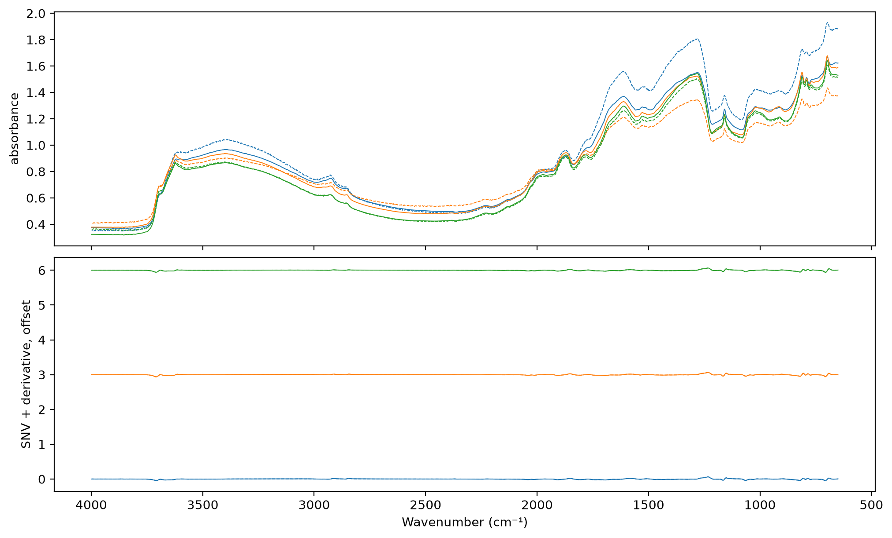

import matplotlib.pyplot as plt
from fastcore.test import *
from soilspecdata.all import load_ossl
from soilspecdl.all import predict
from ossl_fuku_transfer.data import *
from ossl_fuku_transfer.transfer import *
from ossl_fuku_transfer.inside import layer_features, probeAugmentation
Pretrain the CNN on OSSL with random instrument-like perturbations of the raw spectra, and test whether it then transfers better to Fukushima
12_wetchem and 13_epo found that the zero-shot failure lies in the Fukushima spectra, and that linear corrections don’t fix it. Augmentation takes the other route: it trains the CNN on OSSL spectra perturbed in the ways that 05_paired measured between instruments, so that the features it learns change less under such differences.
The perturbations act on raw absorbance, before SNV and the derivative. So in training, SNV and the derivative run on each batch, after the perturbations. At prediction, the spectra are preprocessed offline as before.
The module part uses small random arrays, so it runs without the data. The sections from Data onwards read OSSL and the Fukushima data, and are marked #| fukudata.
Preprocessing on batches
SNVDeriv applies SNV, then the Savitzky-Golay filter, to each spectrum of a batch, as preprocessings()['snv_d1'] does offline. The filter is linear, so it is a matrix: filtering the rows of an identity matrix with SciPy gives it, edges included, and a matrix product applies it on the GPU.
SNVDeriv
def SNVDeriv(
n, # Number of wavenumbers
window_length:int=15, # As in `SavitzkyGolay`
polyorder:int=3, # As in `SavitzkyGolay`
deriv:int=1, # As in `SavitzkyGolay`
):SNV, then the Savitzky-Golay filter, on each spectrum of a batch, as preprocessings()['snv_d1']
rng = np.random.default_rng(0)
X_syn = 1 + 0.3 * rng.random((6, len(shared_wns)))
xb = TensorSpectrum(torch.tensor(X_syn, dtype=torch.float32).unsqueeze(1), wns=shared_wns)
out = SNVDeriv(len(shared_wns))(xb)
test_eq(type(out), TensorSpectrum)
test_close(out.squeeze(1).numpy(), preprocessings()['snv_d1'].fit_transform(X_syn), eps=1e-4)Perturbations
SpectralAug perturbs raw absorbance spectra of training batches. Each perturbation applies to each spectrum with probability p, with a random size drawn from its range:
- Gaussian broadening with a standard deviation up to
sigmapoints. On the 2 cm⁻¹ grid, 3 points is 6 cm⁻¹, the largest broadening tested in05_paired. - A shift along the wavenumber axis of up to
shiftpoints, by linear interpolation.05_pairedmeasured 1.6 cm⁻¹, or 0.8 points. - A contrast change: absorbance, clipped at 10⁻³, raised to a power between
gamma[0]andgamma[1], drawn on a log scale.05_pairedfound about six times less contrast in the Thermo spectra, which SNV does not fully remove. - A baseline: a constant, a slope and a curvature across the spectrum, each up to
baselinetimes the spectrum’s standard deviation. - Gaussian noise with a standard deviation of
noisetimes the spectrum’s standard deviation.
Scaling a whole spectrum is left out, because SNV removes it. As a fastai transform with split_idx = 0, it leaves validation batches unchanged.
SpectralAug
def SpectralAug(
p:float=0.5, # Probability of each perturbation, per spectrum
sigma:float=3.0, # Largest Gaussian broadening, in points
shift:float=1.0, # Largest shift, in points
gamma:tuple=(0.5, 2.0), # Range of the contrast exponent
baseline:float=0.2, # Largest baseline term, relative to the spectrum's standard deviation
noise:float=0.005, # Noise standard deviation, relative to the spectrum's standard deviation
):Random broadening, shift, contrast, baseline and noise of raw absorbance spectra, on training batches only
aug = SpectralAug()
set_seed(0)
xa = aug(xb, split_idx=0)
test_eq((type(xa), xa.shape), (TensorSpectrum, xb.shape))
test_eq(torch.allclose(xa, xb), False)
test_eq(torch.equal(aug(xb, split_idx=1), xb), True)
test_close(SpectralAug(p=0)(xb, split_idx=0), xb, eps=1e-5)pretrain_aug trains SpectralCNN on raw OSSL spectra as pretrain does on preprocessed ones, with aug, SNVDeriv and BatchSNV on each batch. The saved model takes spectra preprocessed offline, like the other pretrained models, and loads with load_pretrained:
pretrain_aug
def pretrain_aug(
X, # Raw OSSL absorbance spectra on `shared_wns`
y, # Targets, such as `log1p` of a soil property
fname, # File name for the weights, without extension
aug:NoneType=None, # Augmentation transform, such as `SpectralAug()`; none if None
seed:int=42, # Seed for the validation split and the training
epochs:int=20, # Number of one-cycle epochs
lr:float=0.001, # Maximum learning rate
):Train SpectralCNN on augmented spectra, or load the weights that an earlier run saved under fname
Data
OSSL Kex and the Fukushima spectra, as in 03_kex. The OSSL spectra stay raw for pretraining:
om = load_ossl().mir(wmin=shared_wns[0], wmax=shared_wns[-1])
Xo, yo, _ = om.xy('k.ext_usda.a725_cmolc.kg')
yo = np.log1p(yo.ravel())
fuku = load_fuku()
fuku.source = fuku.source.assign(target=fuku.source['soil_ex_K2O'] / mg_k2o_per_cmolc)
Xf, yf, idf = fuku.xy('target')
yf = np.log1p(yf.ravel())
is_test = np.isin(idf, cs137_split()[1])
pipe = preprocessings()['snv_d1']
Xf_d = pipe.transform(Xf)
Xo.shape, Xf_d.shape((57674, 1675), (1388, 1675))Three OSSL spectra, raw and after augmentation, then both after SNV and the derivative:
xs = TensorSpectrum(torch.tensor(Xo[:3], dtype=torch.float32).unsqueeze(1), wns=shared_wns)
set_seed(1)
xa = SpectralAug(p=1)(xs, split_idx=0)
sd = SNVDeriv(len(shared_wns))
fig, axs = plt.subplots(2, 1, figsize=(10, 6), sharex=True, layout='constrained')
for i in range(3):
axs[0].plot(shared_wns, xs[i, 0], lw=0.7, c=f'C{i}'); axs[0].plot(shared_wns, xa[i, 0], lw=0.7, ls='--', c=f'C{i}')
axs[1].plot(shared_wns, sd(xs)[i, 0] + 3 * i, lw=0.7, c=f'C{i}'); axs[1].plot(shared_wns, sd(xa)[i, 0] + 3 * i, lw=0.7, ls='--', c=f'C{i}')
axs[0].set_ylabel('absorbance'); axs[1].set_ylabel('SNV + derivative, offset'); axs[1].invert_xaxis(); axs[1].set_xlabel('Wavenumber (cm⁻¹)');
Pretraining
The augmented model trains as the saved model ossl_kex_snv_d1 did: the same split, seed and schedule (20 epochs, learning rate 10⁻³). The last epoch, with the OSSL validation R²:
models = {'no augmentation': load_pretrained('ossl_kex_snv_d1'), 'augmentation': pretrain_aug(Xo, yo, 'ossl_kex_aug', SpectralAug())}
pretrain_history('ossl_kex_aug').iloc[-1].round(3).to_dict(){'train_loss': 0.028, 'valid_loss': 0.032, 'r2_score': 0.782}Fukushima
Zero-shot scores of both models on the Fukushima training and test samples:
pd.DataFrame({(m, s): scores(yf[msk], predict(model, Xf_d[msk], shared_wns)) for m, model in models.items()
for s, msk in (('train', ~is_test), ('test', is_test))}).T.round(3)| R² | r | RMSE | bias | ||
|---|---|---|---|---|---|
| no augmentation | train | -0.748 | 0.162 | 0.597 | 0.305 |
| test | -0.820 | 0.126 | 0.537 | 0.285 | |
| augmentation | train | -0.556 | -0.027 | 0.584 | 0.133 |
| test | -0.707 | -0.096 | 0.539 | 0.140 |
Ridge probes on each frozen layer of both models, trained on the Fukushima training samples and scored on the test samples:
pr = {}
for m, model in models.items():
Fm = layer_features(model, Xf_d)
for k, Fk in Fm.items(): pr[m, k] = probe(Fk[~is_test], yf[~is_test], Fk[is_test], yf[is_test])
pd.DataFrame(pr).T[['R²', 'r']].unstack(0).round(3)| R² | r | |||
|---|---|---|---|---|
| augmentation | no augmentation | augmentation | no augmentation | |
| block 1 | 0.381 | 0.378 | 0.619 | 0.618 |
| block 2 | 0.409 | 0.403 | 0.640 | 0.635 |
| block 3 | 0.420 | 0.396 | 0.649 | 0.629 |
| block 4 | 0.432 | 0.429 | 0.660 | 0.657 |
| block 5 | 0.387 | 0.371 | 0.626 | 0.614 |
| input | 0.332 | 0.332 | 0.582 | 0.582 |
| pooled | 0.313 | 0.253 | 0.563 | 0.504 |
Findings
Augmentation during OSSL pretraining doesn’t make the CNN transfer to Fukushima. The augmented model reaches an OSSL validation R² of 0.78, against 0.79 without augmentation. Its zero-shot correlation for Fukushima Kex is -0.10 on the test samples, against 0.13 without augmentation. Its bias is smaller (0.14 against 0.29 in log1p units), and R² is -0.71 against -0.82.
Ridge probes on its frozen layers give the same Kex scores as without augmentation, within the sampling noise of about 0.04. Block 4 gives R² 0.43 for both models. The largest differences are in block 3 (0.42 against 0.40) and the pooled features (0.31 against 0.25).
The perturbations cover the differences that 05_paired measured between the Bruker and Thermo spectra: broadening, shift, contrast and baseline. A model trained to ignore them still fails on the Fukushima spectra. So these measured differences are not what separates the Fukushima spectra from OSSL for Kex, or the ranges used here are too small. This run tried one setting, with each perturbation applied with probability 0.5.